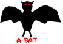

Monday, December the 27th, 2004
back to: title, date or indexes
Having your blood sucked by a vampire bat can be an alarming experience, and not at all like being bled by leeches. In the latter case, you are likely to be attended by a kindly apothecary or physician, who will apply the leeches and make reassuring noises. Alternatively, you may be trudging through a swamp, and leeches will fasten upon your legs and begin to drain your blood, but in such cases you are unlikely to notice them, as you will be half-submerged in the swamp, therefore in your ignorance of the leeches you will not be frightened. A vampire bat is likely to attack you without warning, however, and so you will be alarmed.
Many folk make the mistake of lumping in pipistrelle, Egyptian fruit, red, long-nosed, little brown, pallid, western mastiff, serotine, pocketed free-tailed, woolly false vampire, hoary, Indiana, northern, ghost-faced, greater horseshoe, Brandt, Honduran white, Natterer's, lappet-browed, noctule, Ipanema, tent-making, big brown, evening, yellow, spotted, Nathusius pipistrelle and other bats with vampire bats, and thus being fearful of them all. But only the vampire bat will plunge its fangs in to the soft white flesh of your neck and begin to drain you of your vital gore. If you are awake, and especially if you are active, for example playing lawn tennis, orienteering, or doing outdoor carpentry, you will be able to fight off the vampire bat. Remember that you are bigger and stronger than it is, and be not afraid.
On the other hand, if you are fast asleep, and unprotected by an anti-bat curtain of heavy purple brocade, the vampire bat may suck your blood uninterrupted, until its thirst is sated. If you are the bat's first victim for a while, it may drink all of your blood, and you will not wake up, because you will be lifeless. Do not believe those foolish stories about waking after a visit from a vampire bat and tentatively feeling punctures in your neck and thenceforth being a kind of undead human version with a bloodlust of your own. That will only happen if you live in Transylvania and bear a resemblance to Bela Lugosi or Lon Chaney. Note that Lon Chaney is not to be confused with Lyn Cheney, wife of the current US vice-president.

Left to right : Lon, Lyn, Dick, a bat
Hooting Yard on the Air, December the 29th, 2004 : “Online Learning With Hooting Yard” (starts around 17:26)
Hooting Yard on the Air, April the 20th, 2005 : “Bird Recognition Skills” (starts around 21:34)